TACHOGRAPH
- Path
- Descriptions > 55 ELECTRICAL EQUIPMENT > TACHOGRAPH
- Kind
- system description
- Applies to
- all engines; all production periods
- Interactive page
- https://sloeber94.github.io/elrnDB-fDct/en/#/244000437
Applies to: all engines; all production periods
SPECIFICATIONS
The new generation tachographs are of a modular construction and consist of individual components
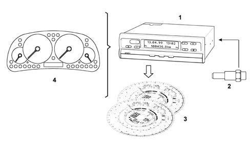
- 1 - recording unit: modular tachograph;
- 2 - pulse generator for tachograph;
- 3 - tachograph discs.
- 4 - instrument panel;
In addition to monitoring the speed and recording the route the tachograph also records four hourly groups:
- driving times;
- all other operating times;
- availability;
- pauses and rest times.
The respective hourly groups are selected by driver 1 and driver 2 using the controls.
The following is shown on the display:
- date;
- time;
- total mileage
- hourly groups used;
- symbols for the tachograph discs inserted.
The diagnostic function includes controlling the system and automatically advises if there is an error with a component or service.
The menu contents for the diagnostic data can be recalled using the control buttons
The instrument panel usually shows the (analogue) speed and the route (total milometer).
There is an option for displaying the daily mileage or a clock.
The impulse generator transforms the transmission revs into impulses and transmits them to the tachograph in the form of real time signals together with the encrypted data.
The impulse generator and the tachograph form a secure tamper-proof unit.
Depending on the time, the tachograph disc also documents the speed, the route and the following four hourly groups:
- driving time;
- further working time;
- times of availability;
- intervals and resting times.
General system specifications
General specifications:
- readings and recording units are separate;
- recording units in DIN ISO 7736 radio format;
- automatic recording of driving time;
- automatic signalling of system faults in LC display: faults in electronic components, mechanical components, instruments, interfaces and speedometer impulse generator;
- automatic adjustment of faults on the tachograph disc;
- automatic switching off of recording of hourly groups / journey after 25 hours;
- check on impulse generator signal with microprocessor control;
- multi-function display with 2 x 16 positions;
- two control panels for the tachograph;
- fixed/adjustable compartment;
- fixed value memory for necessary parameters such as equipment variations, adaptation, mesuring field, etc.
- real time battery-operated clock with automatic switching to and from summertime, specifically designed for different countries, programmed for 5 years;
- automatic pursuit of tachograph disc housing.
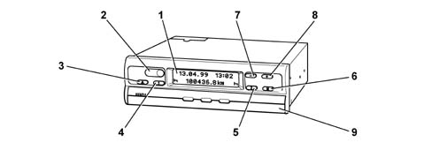
- 1 - Display
- 2 - Lead plates (test and programming interface located behind);
- 3 - Compartment release button;
- 4 - Button for adjusting desired hourly group for driver 1;
- 5 - Button for adjusting desired hourly group for driver 2;
- 6 - Button for selecting the desired menu (multifunction);
- 7 - Return button, one step at a time;
- 8 - Forward button, one step at a time;
- 9 - fixed/adjustable compartment.
The display is lit up when the ignition is turned on.
The standard display permanently shows the date, the time, the total mileage and also the symbols indicating that the tachograph discs are inserted and the hourly group is set for drivers 1 and 2. If necessary, it is possible to display the individual menu points such as the errors memory, programming data, etc.
An error symbol automatically signals an event or problem.
The diagram below illustrates the fixed/adjustable compartment.
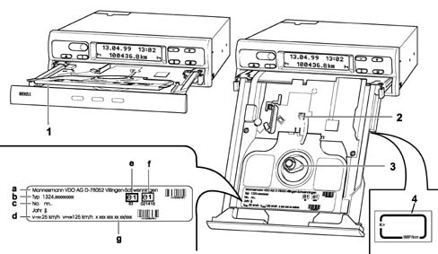
- 1 - Plate separating the tachograph discs for the first and second drivers;
- 2 - control marking to check the correctness of the tachograph disc adjustment position in relation to the time;
- 3 - tachograph disc oval traction pin;
- a - manufacturer;
- b - model;
- c - serial number;
- d - speed measurement range;
- e - homologation marking as control equipment CEE e1-83 or e1-85 with additional rpm adjustment device;
- f - CEM homologation marking;
- g - design number.
- 4 - plate containing the constant speed set on the tachograph
The diagram below shows the rear view of the tachograph.
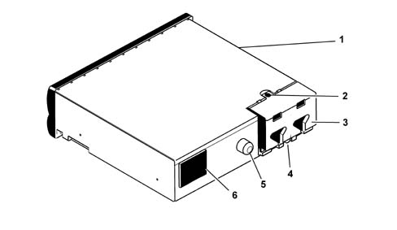
- 1 - Plate with connector layout and wiring diagram showing connection of system components and supply voltage.
- 2 - Protective lead-plating against unauthorized opening of the casing;
- 3 - terminal board cover;
- 4 - Lead-plating on attachment covers;
- 5 - Fastening for support in the radio console;
- 6 - Compartment for buffer battery (already fitted in the factory);
- 7 - Lead-plating for battery compartment.
The diagram below shows the connector layout.
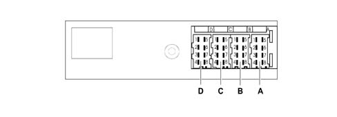
Connector A
Pin | Function |
|---|---|
A1 | + 30 battery positive |
A2 | + side lights positive |
A3 | + 15 ignition-operated power supply |
A4 | n.c. |
A5 | Earth |
A6 | Earth |
A7 | n.c. |
A8 | n.c. |
Connector B
Pin | Function |
|---|---|
B1 | Pulse generator positive + |
B2 | Pulse generator negative - |
B3 | Real time signal |
B4 | Date signal |
B5 | n.c. |
B6 | n.c. |
B7 | Instrument signal |
B8 | n.c. |
Connector C and connector D are not connected.
The diagram below shows the tachograph display.
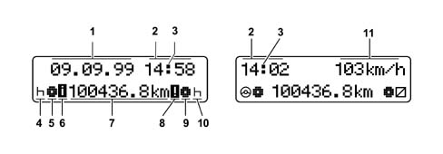
- 1 - current date;
- 2 - current time (local time);
- 3 - tachograph disc movement control warning light;
- 4 - hourly group symbol for driver 1 for driving times, operating times, availability and rest;
- 5 - tachograph disc symbol for driver 1;
- 6 - control and programming interface activated symbol;
- 7 - current mileage;
- 8 - error activated symbol;
- 9 - tachograph disc symbol for driver 2;
- 10 - hourly group symbol for driver 2 for driving times, operating times, availability and rest;
- 11 - optional speed reading equipment.
Menu functions
The individual menu points can be recalled, depending on the user, in two different ways:
- user mode (for the driver);
- service mode (for service personnel).
The user mode can be selected direcly by pressing button M6.
The menu structure sequence is as follows:
- standard reading;
- time change (select/modify using + or - button);
- error memorizing (scan using + or - button).
The service mode can be selected directly by pressing button M6 and switching on within 3 seconds.
The menu structure sequence is as follows:
- standard reading;
- time change (select/modify using + or - button);
- error memorizing (scan using + or - button).
- UTC / status information;
- data programming (scan using + or - button).
- beginning/end of summer-time (scan using + or - button);
Adjusting the time
"Adjusting the time" menu
- select using button M(6)
- activate the adjustment of the time using the + or - button (the minutes reading will start to flash).
Change the minutes:
- set the minutes using the + or - button, keep the button pressed until the desired value appears.
- determine the value set by keeping button M(6) pressed for more than 2 seconds (after which the initial display will appear).
Change the hours:
- press button M(6) briefly (the hours reading will start to flash).
- set the hours using the + or - button, keep the button pressed until the desired value appears.
- determine the value set by keeping button M pressed for more than 2 seconds (after which the initial display will appear).
Changing the time will have the following effect: the offset time displayed in menu 3 "UTC/status information" will have changed as a result of the new setting, the programmed UTC time will not be affected.
The date will be automatically corrected after midnight.
The automatic pursuit of the tachograph disc housing is only carried out if:
- it is switched on with the vehicle stationary;
- there is no tachograph disc in the tachograph;
- the compartment is closed.
If the automatic pursuit of the tachograph disc has not been carried out, the time shown on the display will flash and the error symbol will be displayed.
Errors memory
By recalling the errors memory in service mode, the errors recorded will be shown on the display, complete with the number of errors, the date and the time when they last occurred.
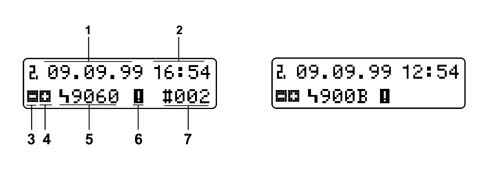
- 1 - Date when the error last occurred;
- 2 - Time when the error last occurred;
- 3 - Symbol to go back;
- 4 - Symbol to go forward;
- 5 - Symbol with error code;
- 6 - Error activated symbol;
- 7 - Number of errors, error presentation frequency (max. 126 recordings).
"Errors memory" menu:
- select using button M(6)
Recall individual errors:
- to go forward, press the + button;
- to go back, press the - button;
- press button M(6) for more than 2 seconds to return to the initial display.
Events/faults table
Code | Meaning |
|---|---|
A00C | Internal error |
A00E | Equipment not calibrated |
A400 | Power cut* |
A822 | Error with the transducer key/serial number/signal* |
A423 | Error in the transducer communication* |
A411 | Error with instrument communication break |
A050 | Departure without first driver tachograph disc |
9430 | Connect B pin 7 pulse output error |
9010 | LCD error |
9060 | Compartment operation error |
9061 | Tachograph disc activating system error* |
9062 | Multiple graphic recorder error* |
9063 | Recorder lifting system error* |
9064 | Tachograph disc operation or pursuit device operation error |
900F | Control panel error |
9051 | First driver tachograph disc missins |
9052 | Second driver tachograph disc missins |
9053 | Carry out tachograph disc housing pursuit |
UTC/STATUS information
The UTC/status information is shown on the display.
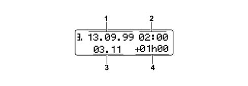
- 1 - Date;
- 2 - UTC time;
- 3 - Firmware version;
- 4 - Offset time.
The offset time consists of:
- offsetting of the local time in relation to the UTC time (hourly zone and corrections made individually)
- offset due to the beginning/end of standard time.
Programming data
Programming data menu:
- select using button M.
- recall data by pressing + or - buttons.
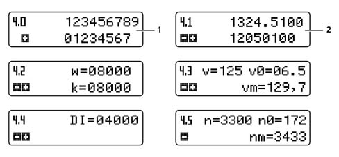
- 1 - Vehicle registration number (max. 17 characters);
- 2 - Tachograph product key;
- w - Vehicle journey no. of impulses [lmp./km];
- k - Equipment constant [Imp./km];
- v - Measurement range [km/h];
- v0 - Minium measurement range [km/h];
- vm - Maximum measurement range [km/h];
- DI - rpm impulses [Imp./1000 U];
- n - Measurement range [U/min];
- n0 - Minimum measurement range [U/min];
- nm - Maximum measurement range [U/min];
Beginning / end of summer-time
Indication of the start/end of summer time based on UTC as established by the EU member states for several years.
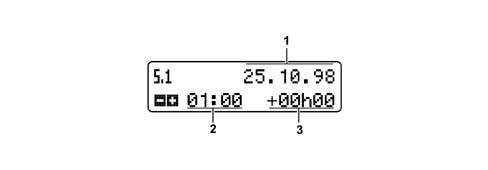
- 1 - Date;
- 2 - Switching point in UTC time;
- 3 - Correction figure.
Beginning / end of summer-time menu:
- select using button M.
- recall individual data by pressing + or - button;
- last recording.
Impulse generator for tachograph
The impulses sent by the impulse generator are used for recording the route and the speed.
Impulse generator specifications:
- contact-free measuring process for integrated impulse generators;
- transmission of impulse generator serial number and control in tachograph;
- data protection thanks to the DES (Data Encryption Standard) coding procedure (2 - 56);
- comparison of real time signal with coded signal in tachograph.
Tachograph disc
Description of the tachograph disc.
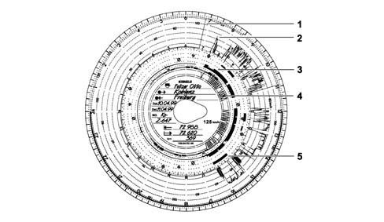
- 1 - Detection of compartment opening (each opening is documented on the tachograph disc for the first driver).
- 2 - Speed km/h (during the journey).
- 3 - Recording of the time groups: driving times, further operating times, ready for use times (pause times, accompanying time, cabin rest time during the journey). Rest intervals and times.
- 4 - Routes calculated; each upwards and downwards recording corresponds to 5 km (If the pause time and rest time group is set and the ignition is switched off, the journey recording is interrupted).
The recording of the rotation frequency takes place at the rear of the tachograph disc for driver 1 if a tachograph with an additional device for recording the rotation frequency is used.
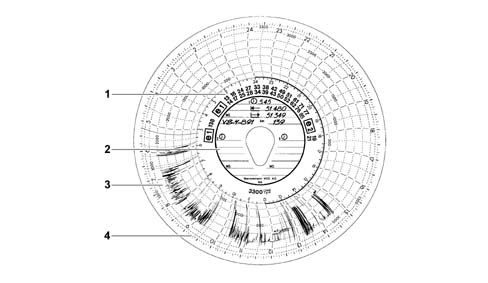
- 1 - Range for the number of checks (homologation marks);
- 2 - Internal range;
- 3 - Rpm frequency recording;
- 4 - Ignition on/off markings
Change of drivers
If the driver changes vehicles during their work shift, they must take the tachograph disc with them and make a note of this change on the back of the actual disc.
If the crew swaps and the second driver takes over the driving, the tachograph discs must be changed over. The first driver (who has now become the second driver) should insert their tachograph disc under the separator support and the second driver (who has now become the first driver) should insert theirs above this support.
If the first or the second driver leaves the vehicle, they must take their tachograph disc with them. The new first driver (or the new second driver) should insert their tachograph disc above the separator support (under it for the second driver). If there is no second driver, position the time groups at the rest times.
If the first and second drivers both leave the vehicle, each of them should remove their tachograph disc from the unit. The new vehicle crew (first and/or second driver) should place their tachograph discs in the appropriate positions.
Installation plate
The plate shown in the diagram below is located on the fixed section of the door frame.
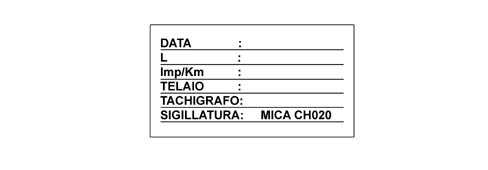
- DATE - this is the installation date of the tachograph
- L - this is the circumference of the wheels
- Imp/Km - this is the speed constant set
- CHASSIS - contains the chassis no.
- TACHOGRAPH - contains the serial number of the tachograph
- SEAL- contains the seal no.